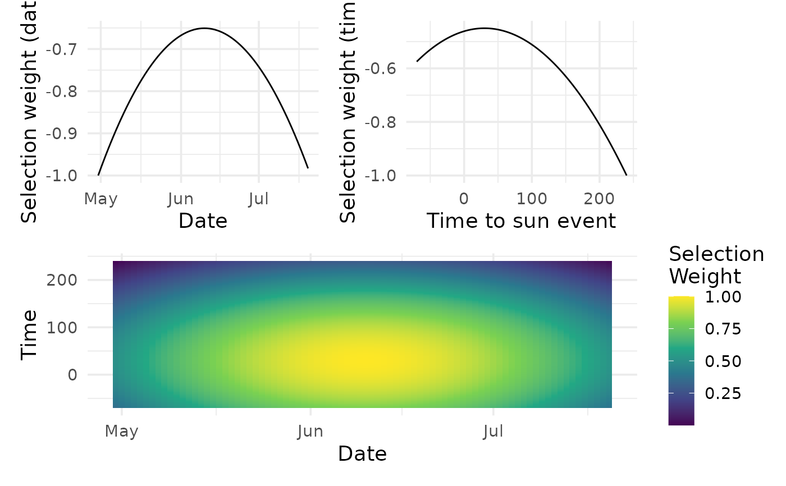

Calculate selection weights for a series of recordings based on the selection
parameters defined by sim_selection_weights().
Usage
calc_selection_weights(
meta_sun,
params,
col_site_id = site_id,
col_min = t2sr,
col_day = date
)Arguments
- meta_sun
(Spatial) Data frame. Recording meta data with time to sunrise/sunset. Output of
calc_sun(). Must have at leastcol_min,col_day, andcol_site_id.- params
Named list. Parameters created by
sim_selection_weights(), containingmin_range,min_mean,min_sd,day_range,day_mean,day_sd,offset,return_log,selection_fun.- col_site_id
Column. Unquoted column containing site strata IDs (defaults to
site_id).- col_min
Column. Unquoted column containing minutes to sunrise (
t2sr) or sunset (t2ss) output fromcalc_sun()(defaults tot2sr).- col_day
Column. Unquoted column containing dates or day-of-year (doy) to use (defaults to
date).
Value
Returns data with appended selection weights columns:
psel_by- The minutes column usedpsel_min- Probability of selection by time of day (min column)psel_doy- Probability of selection by day of yearpsel- Probability of selection overallpsel_scaled- Probability of selection scaled overallpsel_std- Probability of selection standardized within a sitepsel_normalized- Probability of selection normalized within a site
Examples
s <- clean_site_index(example_sites_clean,
name_date_time = c("date_time_start", "date_time_end")
)
m <- clean_metadata(project_files = example_files) |>
add_sites(s) |>
calc_sun()
#> Extracting ARU info...
#> Extracting Dates and Times...
#> Joining by columns `date_time_start` and `date_time_end`
params <- sim_selection_weights()

calc_selection_weights(m, params = params)
#> # A tibble: 27 × 24
#> file_name type path aru_id manufacturer model aru_type site_id tz_offset
#> <chr> <chr> <chr> <chr> <chr> <chr> <chr> <chr> <chr>
#> 1 P01_1_20200… wav a_BA… BARLT… Frontier La… BAR-… BARLT P01_1 -0400
#> 2 P02_1_20200… wav a_S4… S4A01… Wildlife Ac… Song… SongMet… P02_1 NA
#> 3 P02_1_20200… wav a_S4… S4A01… Wildlife Ac… Song… SongMet… P02_1 NA
#> 4 P03_1_20200… wav a_BA… BARLT… Frontier La… BAR-… BARLT P03_1 -0400
#> 5 P06_1_20200… wav a_BA… BARLT… Frontier La… BAR-… BARLT P06_1 -0400
#> 6 P07_1_20200… wav a_S4… S4A01… Wildlife Ac… Song… SongMet… P07_1 NA
#> 7 P07_1_20200… wav a_S4… S4A01… Wildlife Ac… Song… SongMet… P07_1 NA
#> 8 P08_1_20200… wav a_BA… BARLT… Frontier La… BAR-… BARLT P08_1 -0400
#> 9 P09_1_20200… wav a_S4… S4A02… Wildlife Ac… Song… SongMet… P09_1 NA
#> 10 P01_1_20200… wav j_BA… BARLT… Frontier La… BAR-… BARLT P01_1 -0400
#> # ℹ 17 more rows
#> # ℹ 15 more variables: date_time <dttm>, date <date>, longitude <dbl>,
#> # latitude <dbl>, tz <chr>, t2sr <dbl>, t2ss <dbl>, doy <dbl>, psel_by <chr>,
#> # psel_min <dbl>, psel_doy <dbl>, psel <dbl>, psel_scaled <dbl>,
#> # psel_std <dbl>, psel_normalized <dbl>